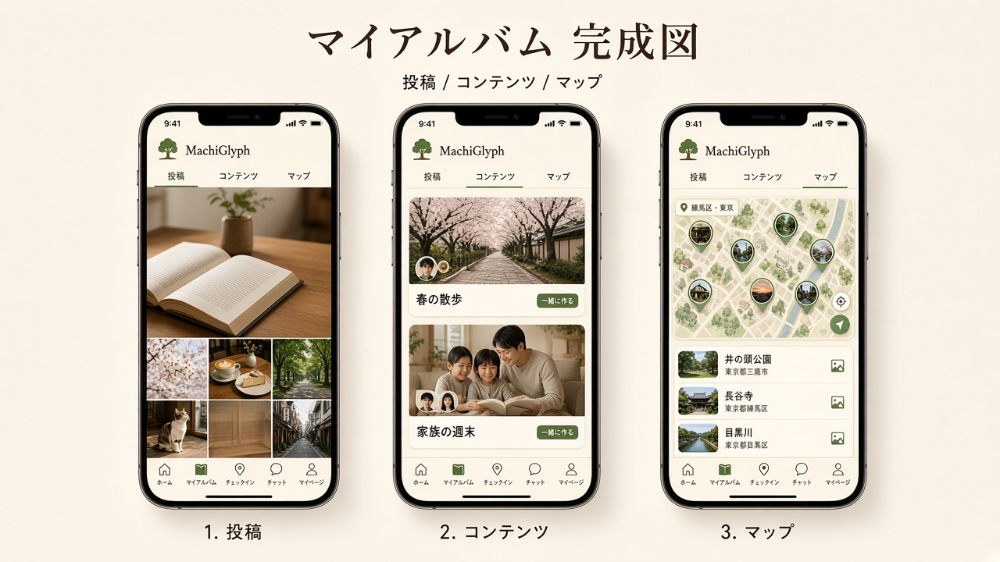
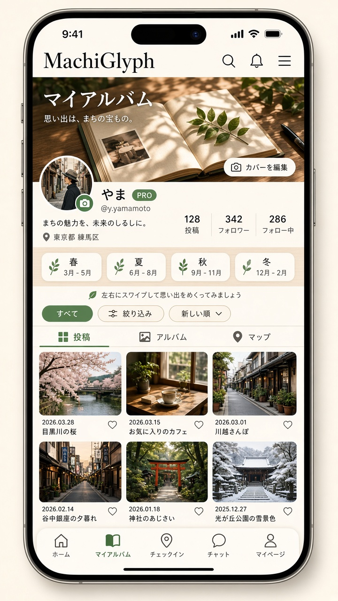
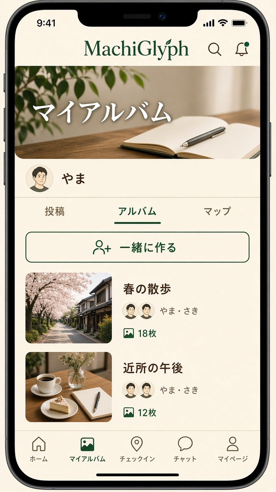
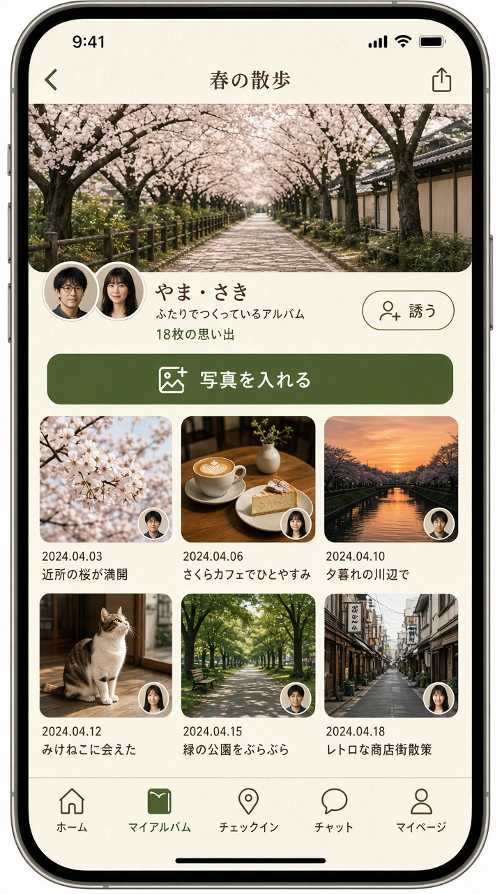
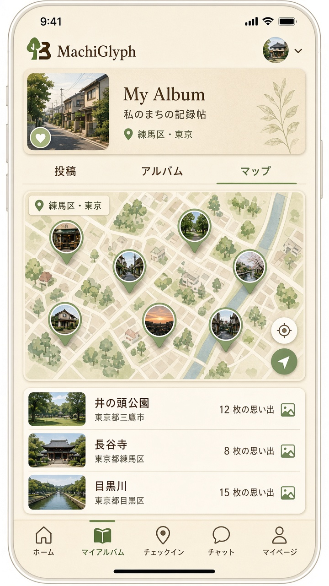

全体
3画面の並び。ボトムナビは今のまま（ホーム / マイアルバム / チェックイン / チャット / マイページ）。

1. 投稿
自分の記録。カバー・プロフィール・3列グリッド。

2. アルバム一覧
一緒に作るボタンと、ふたりのアイコンがついたカード。本はありません。

3. アルバム詳細
誘う・写真を入れる。誰が入れたかが角の小さな顔でわかります。

4. マップ
写真ピンと、場所ごとの件数。
